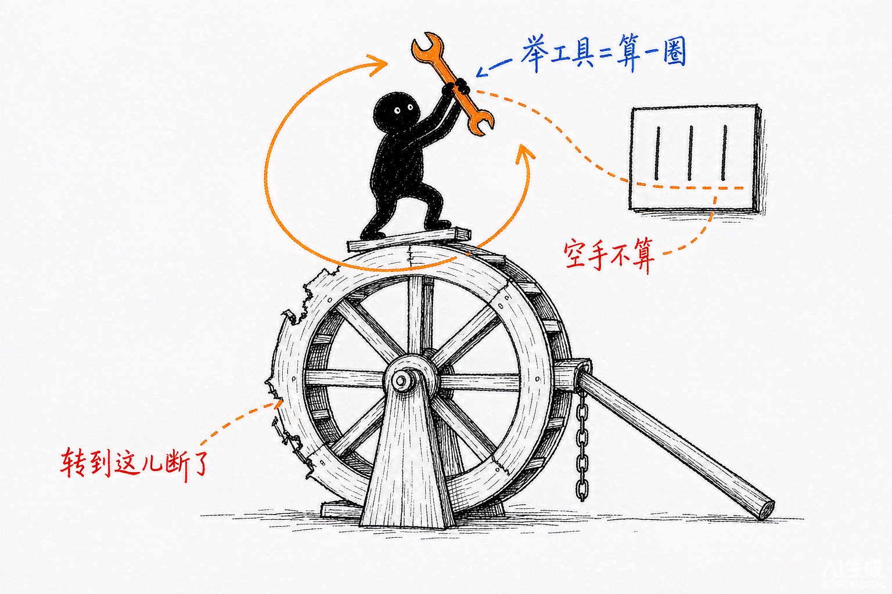
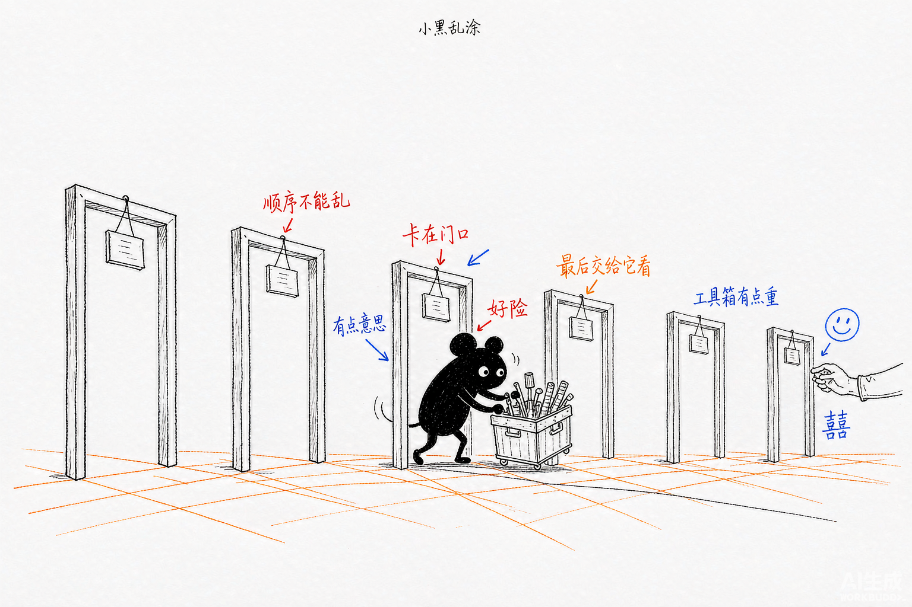
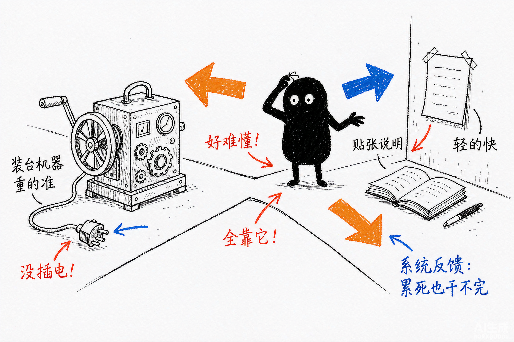
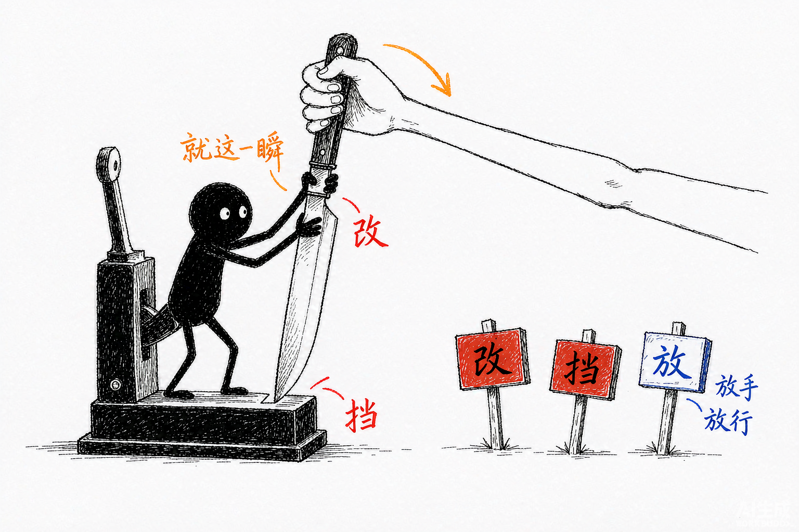
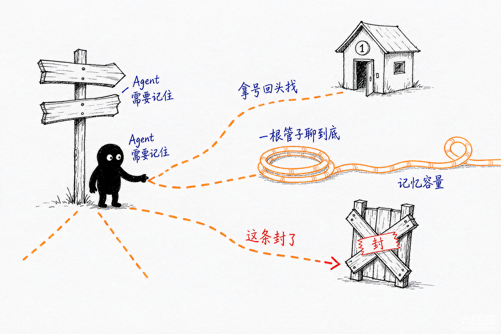
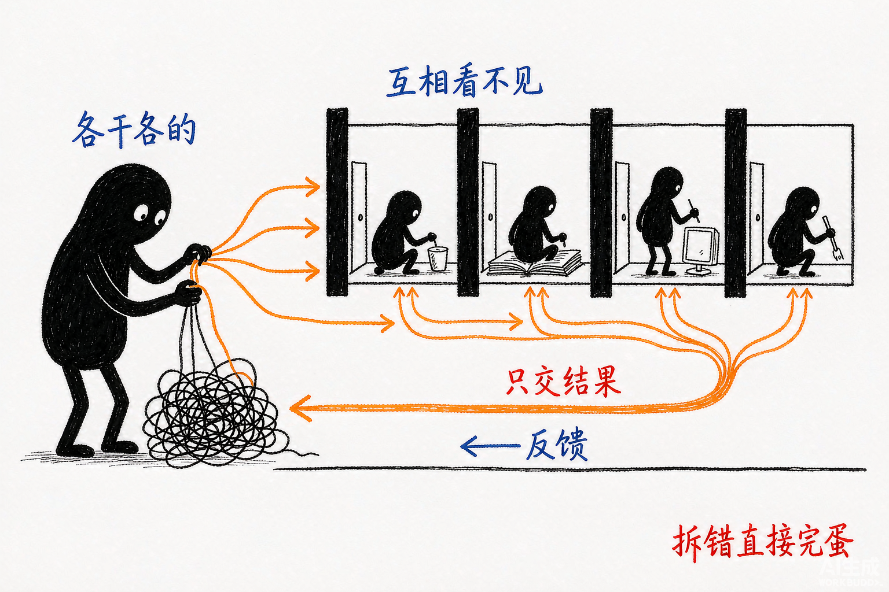
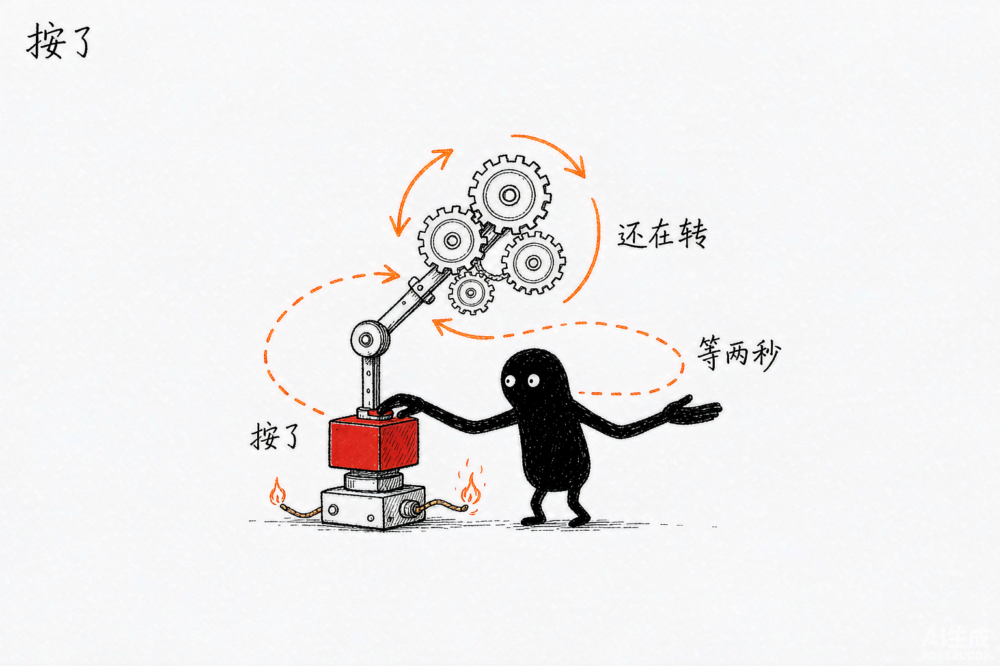
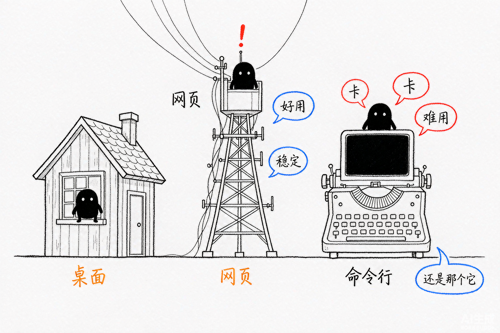

Claude Agent SDK 实战案例
Learning the SDK Through 8 Official Demos
创建者: 标叔
为谁创建: 想用 Claude Agent SDK 做真实产品的开发者。要求会写 TypeScript 或 Python，最好被 AI 应用折腾过一次
基于: @anthropic-ai/claude-agent-sdk 与官方案例仓库 claude-agent-sdk-demos（8 个 demo、74 个源码文件）
最后更新: 2026-09-06
适用场景: 从第一次跑通 query()，到把 Agent 塞进桌面应用、Web 服务和批处理脚本
阅读指南
| 时间 | 章节 | 目标 |
|---|---|---|
| Day 1 | §01-§03 | 建立正确的心智模型，跑通第一个 Agent |
| Day 2-3 | §04-§06 | 掌握工具、自定义扩展、Hooks 三件武器 |
| Day 4-5 | §07-§08 | 搞定多轮会话与多 Agent 编排 |
| Day 6-7 | §09-§12 | 流式中断、宿主形态、生产化落地 |
全书结构
Part 1 起步 —— §01 它不是 SDK，是一个会干活的进程 / §02 跑通第一个 query / §03 Agent 循环内幕
Part 2 核心能力 —— §04 工具与权限四层闸 / §05 自定义工具怎么造 / §06 Hooks 拦截时机 / §07 多轮会话三种范式 / §08 多 Agent 编排
Part 3 进阶实战 —— §09 流式与中断 / §10 三种宿主形态 / §11 生产化七道坎 / §12 从调模型到造环境
Part 1: 起步
从零到一。读完这三章，你能跑通第一个真正干活的 Agent。
§01 它不是 SDK，是一个会干活的进程
小黑值守在铁皮舱室里，两根管子一根塞活、一根吐结果——你启动的不是一次调用，是一个会干活的进程。
01.1 我把 8 个官方 demo 全读了一遍
我把官方案例仓库里的 8 个 demo 全读完了。70 个 TypeScript 文件，4 个 Python 文件。
读完最大的感受是：大部分人第一次接触 Claude Agent SDK，都会把它理解错。
它不是 SDK。至少不是你熟悉的那种 SDK。
你熟悉的 SDK 长这样：你调一个方法，它返回一个结果。你负责拼参数，它负责执行。
Claude Agent SDK 不长这样。你调 query()，它返回一个消息流。中间发生的事，你不参与。
这个差别很小。但后面所有 API 的设计，都由它决定。
标叔的经验：读 email-agent 源码时，我数了一下文件。 这个项目一共 96 个文件。React 界面、SQLite 数据库、IMAP 邮件同步，占掉绝大多数。 真正跟 Agent SDK 打交道的文件，只有
ccsdk/下的 9 个。 这就是这个 SDK 的价值：它把最难的活收走了，你只写自己的业务逻辑。
01.2 三条路，别走错
Anthropic 官方把三者分得很清楚。我把它翻译成人话：
| 维度 | Anthropic Client SDK | Claude Agent SDK | 标叔的结论 |
|---|---|---|---|
| 谁实现工具循环 | 你 | Claude 自己 | 这是唯一的分水岭 |
| 工具从哪来 | 你自己写 executor | 内置 10 个开箱即用 | 省掉八成活 |
| 返回什么 | 一条 message | 一串消息流 | 想看进度选它 |
| 上下文谁管 | 你自己攒 messages | 自动压缩管理 | 长任务才看得出差距 |
| 典型代码量 | 几百行 | 十几行 | 先看这个再决定 |
重点看第二行。工具从哪来，决定了你要写多少代码。
官方给的对比代码，一眼就能看懂：
# Client SDK：工具循环是你自己的活
response = client.messages.create(...)
while response.stop_reason == "tool_use":
result = your_tool_executor(response.tool_use) # 这行你得自己写
response = client.messages.create(tool_result=result, **params)
# Agent SDK：Claude 自己转圈，你只看结果
async for message in query(prompt="Fix the bug in auth.py"):
print(message)
左边那个 while 循环，就是工具循环。判断要不要用工具、执行工具、把结果喂回去、再问一次。
写过的人知道，这个循环看着简单，写起来没完。错误重试、参数校验、并发工具调用、结果截断，一层套一层。
Agent SDK 把整个循环搬进了子进程。你只管发 prompt，然后收消息。
01.3 心智模型：一个子进程，两根管道
官方文档里有一句关键描述，很多人跳过了：
The TypeScript SDK bundles a native Claude Code binary for your platform as an optional dependency, so you don't need to install Claude Code separately.
翻译过来：装 SDK 的时候，一个 Claude Code 的原生可执行文件已经跟着装好了。
hello-world 的 README 说得更直白：SDK 会 spawn 一个 Claude Code 进程作为子进程，通过 stdin/stdout 跟它通信。
画出来是这样：
三个类比，递进着看：
第一个类比：Client SDK 像你自己做饭。洗菜、切菜、下锅，每一步都是你的手。
第二个类比：Agent SDK 像你请了个厨师。你说"做个番茄炒蛋"，他自己开冰箱、自己洗切炒。你只在旁边看。
第三个类比：Claude Code CLI 是那个厨师本人。Agent SDK 是你跟厨房之间的一套传菜系统。
看懂"子进程"这三个字，一堆 API 设计就全通了：
- 为什么有
cwd？ 厨师得知道去哪个厨房干活。这个目录必须存在，不然 spawn 直接 ENOENT。 - 为什么有
executable？ 得告诉 SDK 用哪个 Node 去启动子进程。默认是"node"，在 Bun 或者其他运行时底下经常找不到，报spawn node ENOENT。 - 为什么消息是流式的？ 因为对面是个活进程，边干边汇报。不是一次算完再返回。
- 为什么
maxTurns官方默认没有上限？ 转圈是它自己转的。但上限该由你的业务定，SDK 不替你做这个决定。官方案例里普遍设 100，那只是示例值。
这四条，没有一条是凭空设计的。全部是"对面是个进程"这件事的推论。
01.4 什么时候该用它
先给结论：如果你的任务需要 Agent 读写文件、跑命令、搜网页，用它。
| 你的场景 | 该不该用 | 理由 |
|---|---|---|
| 让 AI 改你的代码库 | 该用 | 内置 Read/Edit/Bash，直接干活 |
| 批量处理本地文件 | 该用 | 它自己遍历，你不用写循环 |
| 要 Agent 联网调研写报告 | 该用 | WebSearch/WebFetch 现成 |
| 只是一个聊天机器人 | 别用 | 杀鸡用牛刀，用 Client SDK |
| 要精确控制每一轮 prompt | 别用 | 中间过程你插不进去 |
| 高并发短请求 | 慎用 | 每次 query 都要起一个进程 |
最后一行的"慎用"，是这本书后面会反复回来讲的事。起进程有成本。§11 讲生产化的时候，我们再算这笔账。
上面讲的是"它是什么"。下一章，我们真的把它跑起来。
我会带你把 hello-world 这个 69 行的文件，一行一行拆开看。
§02 装完就能跑，难的是看懂它吐出来的东西
query() 吐出一长串消息，混着文字、账单和号码牌，只盯着文字看会漏掉要紧的东西。
02.1 你需要什么
四样东西。二十分钟够了。
| 项 | 要求 | 标叔的结论 |
|---|---|---|
| 运行时 | Node 18+ 或 Bun | 新手用 Node，别自找麻烦 |
| API key | console.anthropic.com 申请 | 走环境变量，别硬编码 |
| 工作目录 | 必须真实存在 | 不存在直接 ENOENT，这是第一大坑 |
| 依赖 | SDK + tsx | tsx 用来直接跑 TS，省掉编译 |
02.2 我们最终要做成什么
跑通官方案例仓库里的 hello-world。它一共 69 行，做两件事：
第一，让 Claude 用一句话自我介绍。
第二，装一道拦截：如果 Claude 想写 .js 或 .ts 文件，只允许写到 agent/custom_scripts/ 目录，写到别处一律拦下。
第二件事才是重点。它演示了你怎么在 Agent 动手之前插手。
02.3 安装和配置
第一步：装依赖
npm install @anthropic-ai/claude-agent-sdk typescript @types/node tsx zod
预期结果：node_modules/@anthropic-ai/claude-agent-sdk 出现。
这里有个事实值得留意：
The TypeScript SDK bundles a native Claude Code binary for your platform as an optional dependency, so you don't need to install Claude Code separately. （TypeScript SDK 会把对应平台的原生 Claude Code 二进制作为可选依赖一起装上，你不用单独安装 Claude Code。）
—— overview.md，这是官方文档原文。
第二步：设 API key
export ANTHROPIC_API_KEY="your-api-key"
预期结果：echo $ANTHROPIC_API_KEY 能打印出来。
第三步：建工作目录
mkdir -p agent/custom_scripts
预期结果：agent/ 和 agent/custom_scripts/ 两个目录都在了。
注意：
cwd必须存在这是新手踩得最多的一个坑。SDK 会 spawn 子进程，工作目录不存在就直接 ENOENT。 报错信息长这样：
ENOENTerrors on spawn。 解法就是第三步那行mkdir -p。
02.4 逐行拆解
我把 hello-world 的核心部分贴出来，关键行加了注释：
import { query } from '@anthropic-ai/claude-agent-sdk';
import type { HookJSONOutput } from "@anthropic-ai/claude-agent-sdk";
import * as path from "path";
const q = query({
prompt: 'Hello, Claude! Please introduce yourself in one sentence.',
options: {
maxTurns: 100, // 工具调用轮次上限，官方默认其实是无限制
cwd: path.join(process.cwd(), 'agent'), // 这行是关键：Agent 在哪个目录干活
model: "opus", // 不设则取决于你的认证方式和订阅
executable: "node", // 这行是关键：用哪个二进制启动子进程
allowedTools: ["Task", "Bash", "Glob", "Grep", "Read", "Edit", "Write", "WebSearch"],
hooks: { /* 下一节讲 */ },
},
});
for await (const message of q) { // 流式消费消息，不是一次拿到结果
if (message.type === 'assistant' && message.message) {
const textContent = message.message.content.find((c: any) => c.type === 'text');
if (textContent && 'text' in textContent) {
console.log('Claude says:', textContent.text);
}
}
}
三个字段值得单独说：
cwd —— 上一章讲过，厨师得知道进哪个厨房。这里必须给一个存在的绝对路径。
executable —— 告诉 SDK 用哪个 Node 去启动子进程。默认值是 "node"。在 Bun 或者其他非标准运行时底下，经常找不到，报 spawn node ENOENT。显式写上就没事了。
allowedTools —— 名单里的工具自动放行，不用每次问你。不在这个名单里的，走权限流程。
标叔的经验：官方 Quickstart 里记了一个真实报错，我原样贴给你。
API error thinking.type.enabled is not supported for this model（出现在 Opus 4.7 上） 官方给的解法是：升级到 Agent SDK v0.2.111 或更高版本。这条我印象很深，因为它暴露了一个事实：SDK 版本和模型版本是耦合的。 升级模型之前，先看一眼 SDK 版本。
02.5 它吐出来的到底是什么
query() 返回的是一个异步迭代器。你用 for await 消费它，拿到一串消息。
官方把消息分成五类（来自 agent-loop.md）：
| 类型 | 是什么 | 标叔的结论 |
|---|---|---|
SystemMessage |
系统消息，含 init 元数据 | session_id 在这里，赶紧存下来 |
AssistantMessage |
Claude 的输出，含文本块和工具调用块 | 你要展示给用户的就是这个 |
UserMessage |
用户消息回显 | 做 transcript 时有用 |
StreamEvent |
原始 token 增量 | 要打字机效果才开 |
ResultMessage |
最终结果，含成本和轮次 | 算钱靠它 |
先跑一个最简版本，把消息类型打出来看：
for await (const message of q) {
console.log('---', message.type); // 先看清楚有哪些类型
if (message.type === 'result') {
console.log('subtype:', message.subtype); // success 还是各种 error
console.log('cost:', message.total_cost_usd); // 花了多少钱
console.log('turns:', message.num_turns); // 转了多少轮
console.log('session:', message.session_id); // 会话 ID，多轮要用
}
}
预期结果：你会看到一串 system → assistant → result。
那句 session_id 现在看着不起眼。到 §07 讲多轮会话的时候，它是唯一的钥匙。
02.6 回顾
二十分钟，我们跑通了一个会自我介绍的 Agent，还顺手装了一道文件写入拦截。
代码一共 69 行，真正跟 SDK 打交道的不到 20 行。
核心建议：第一遍先别管那个 hooks 配置。
先把
prompt、cwd、allowedTools三个字段玩明白。 这三个字段能吃透，80% 的场景你已经能做了。
装完跑通了。但你有没有想过一个问题：这中间到底转了多少圈？
下一章我们把它拆开看。
§03 它自己转圈，你得知道圈在哪儿断

循环自己转圈，但只有手里真拿了工具的那圈才计数，空手说话的那圈不算。
03.1 循环只有五步
官方文档 agent-loop.md 把循环拆成五步，很干净：
| 步 | 官方动作 |
|---|---|
| 1 | Receive prompt（收到你的 prompt） |
| 2 | Evaluate and respond（评估并回应） |
| 3 | Execute tools（执行工具） |
| 4 | Repeat（重复 2-3） |
| 5 | Return result（返回结果） |
官方原话：
Claude evaluates your prompt, calls tools to take action, receives the results, and repeats until the task is complete. （Claude 评估你的 prompt，调用工具采取行动，拿到结果，然后重复这个过程直到任务完成。）
画成时序更清楚：
判断循环结束的信号只有一个：Claude 产出了一个不带工具调用的响应。
03.2 maxTurns 数的是什么，大部分人搞错了
这一节是全章最容易搞错的地方。我把它列成表：
| 常见误解 | 官方事实 | 标叔的结论 |
|---|---|---|
maxTurns 默认 100 |
默认无限制 | 100 只是示例值，别当默认值 |
| 一轮对话算一个 turn | 只数含工具调用的轮 | 最后那句纯文本不计数 |
| 设 100 就会跑满 100 轮 | 任务完成立刻停 | 它是天花板，不是目标 |
官方原文两句话，看起来矛盾，其实不矛盾：
Each full cycle is one turn. （每个完整循环算一个 turn。）
maxTurnscounts tool-use turns only. （maxTurns 只统计含工具调用的 turn。）
官方举的例子：一次任务用了四个 turn，其中三个带工具调用，最后一个是纯文本响应。按 maxTurns 的口径，只算 3。
那为什么官方案例里普遍写 100？
我的判断是：防御性设置。SDK 不替你决定上限，但放任一个 Agent 无限转圈，成本会失控。设一个 100，是给自己兜底。
注意：不设
maxTurns不等于安全官方文档在 hosting 章节专门提了一句：会话不会自己超时。 原话是 "An agent session will not timeout, but consider setting a maxTurns property to prevent Claude from getting stuck in a loop." （agent 会话不会超时，但建议设 maxTurns 防止 Claude 卡在循环里。）
换句话说：不设上限，等于把信用卡交给它。
03.3 循环怎么断，看 result 的 subtype
result 消息的 subtype 字段，就是循环的死因报告。一共五种：
| subtype | 什么意思 | 标叔的结论 |
|---|---|---|
success |
正常完成 | 只有它有 result 字段 |
error_max_turns |
撞上 maxTurns 上限 | 任务没干完，要么加轮次要么拆任务 |
error_max_budget_usd |
撞上金额上限 | 成本爆了，查一下是不是卡循环了 |
error_during_execution |
执行中被打断 | 比如 API 挂了，或者你主动中断 |
error_max_structured_output_retries |
结构化输出重试超限 | schema 写太严了，§09 细讲 |
这里有个坑，很多人中招：
注意：
result字段只在success时存在官方文档原文："The
resultfield (the final text output) is only present on the success variant."也就是说，失败的时候
message.result是 undefined。 你如果直接console.log(message.result)，成功时好好的，失败时打出一个 undefined，然后你开始怀疑人生。正确的写法是先判 subtype：
typescript if (message.type === 'result') { if (message.subtype === 'success') { console.log(message.result); // 只有这里有值 } else { console.error('挂了:', message.subtype); } console.log('花了: $' + message.total_cost_usd); // 这个所有 subtype 都有 }
好消息是：不管成功失败，total_cost_usd、usage、num_turns、session_id 这四个字段都在。
钱花了多少，转了多少圈，会话 ID 是什么 —— 一律可查。
03.4 上下文会自己变短
Agent 转圈转久了，对话历史会越来越长。长到一定时候，模型上下文装不下了。
SDK 的处理是自动压缩：
When the context window approaches its limit, the SDK automatically compacts the conversation: it summarizes older history to free space. （当上下文窗口接近上限时，SDK 会自动压缩对话：把较早的历史做摘要，腾出空间。）
压缩发生的时候，你会收到一条 system 消息，subtype 是 compact_boundary。
这件事有两面性：
好处是你不用管，长任务能一直跑下去。
坏处是压缩是有损的。早期的细节会被摘要掉。如果你的任务依赖很久之前的某句话，压缩之后它可能就只剩个大概了。
标叔的经验：一个可操作的判断
如果你的任务能在 20 轮以内干完，不用管压缩。 如果要跑几十上百轮，那就别指望靠上下文传递信息。 把关键信息写进文件，让 Agent 去读文件，而不是指望它记住。
这个思路后面 §08 讲多 Agent 编排时还会回来 —— 子 Agent 的上下文隔离，本质上是一回事。
循环、计数、边界，这三样看明白了，你已经能判断一个 Agent 任务"为什么卡住"。
但还缺一样：它手上到底有哪些工具，谁能用，谁不能用。
下一章开始进入 Part 2，我们讲工具与权限。
Part 2: 核心能力
五章。每章一个能力，每个能力锚定一个官方案例。
§04 权限不是开关，是五道安检门

一次工具动作要按顺序穿过好几道门，最后一道可以把决定权交回给人。
04.1 先给结论：检查是有顺序的
大部分人以为权限就是一个开关：允许，或者不允许。
不是。官方文档 permissions.md 给了一个明确的顺序：
When Claude requests a tool, the SDK checks permissions in this order: 1. Hooks → 2. Deny rules → 3. Permission mode → 4. Allow rules → 5. canUseTool callback （当 Claude 请求一个工具时，SDK 按这个顺序检查权限：1. Hooks → 2. 拒绝规则 → 3. 权限模式 → 4. 允许规则 → 5. canUseTool 回调。）
画出来是这样：
记住这张图。后面所有权限相关的困惑，回到这张图上对一遍就清楚了。
04.2 六种权限模式
| 模式 | 官方行为 | 标叔的结论 |
|---|---|---|
default |
无自动批准，未匹配的工具触发 canUseTool | 默认值，从它开始 |
acceptEdits |
文件编辑和文件系统操作自动批准 | 改代码场景最省心 |
plan |
只跑只读工具，Claude 只分析不改文件 | 想先看方案再动手就用它 |
dontAsk |
未预先批准的一律拒绝，canUseTool 永不调用 | 无人值守场景，最保守 |
bypassPermissions |
所有工具无需确认直接跑 | 官方原话：use with caution |
auto |
用小模型分类器逐个批准或拒绝（仅 TypeScript） | 想要自动化又不敢全放 |
两个细节值得展开：
第一，bypassPermissions 会绕过 allowedTools 的限制。 官方原话是 "Every tool is approved, not just the ones you listed"（每个工具都被批准，不只是你列出的那些）。这跟很多人的直觉相反 —— 以为开了 bypass 再配 allowedTools 还能收窄，其实不会。
第二，子 Agent 会继承权限模式。 父 Agent 用 bypassPermissions、acceptEdits 或 auto 时，所有子 Agent 继承，且无法单独覆盖。
注意：
acceptEdits有作用域限制它只自动批准工作目录内，或者
additionalDirectories里列出的路径。 目录外的路径、受保护路径，照样会弹提示。 这条官方写在 permissions.md 里，不算显眼。
04.3 allowedTools 和 tools，看着像，其实不是一回事
这是本节最容易被忽略的一条。官方原文：
toolsand bare-namedisallowedToolsentries change availability.allowedToolsand scopeddisallowedToolsrules change permission only. （tools和裸名disallowedTools改变可用性；allowedTools和带作用域的disallowedTools只改变权限。）
翻译成人话：
| 配置 | 效果 | 标叔的结论 |
|---|---|---|
tools: ["Read","Grep"] |
Claude 的上下文里只出现这两个工具，其他全被移除 | 想彻底禁掉某个工具用它 |
allowedTools: ["Bash"] |
Bash 在，且自动批准，其他工具还在但要走审批 | 只想免确认，用它 |
disallowedTools: ["Bash"] |
Bash 从请求里移除，Claude 看不见它 | 等于 tools 的反向写法 |
disallowedTools: ["Bash(rm *)"] |
Bash 还在，但匹配 rm * 的调用被拒 |
想禁某个用法而非整个工具 |
最后一行是个狠招。加了作用域的 deny 规则，在所有模式下都生效，包括 bypassPermissions。
这是唯一一个能穿透 bypassPermissions 的手段。做安全加固时记住它。
04.4 canUseTool：把决定权拿回自己手里
前四道门都是配置。第五道门是代码，也是唯一一道能跟真人互动的。
canUseTool: async (toolName: string, input: any) => {
// 你可以在这里做任何事：弹窗、发消息、查数据库
return {
behavior: 'allow' | 'deny',
updatedInput?: any, // 仅 allow 时有意义，可以改 Claude 传的参数
message?: string // deny 时给 Claude 一个理由
};
}
注意 updatedInput 这个字段。它不只是"批准"，而是批准并改写。
Claude 想读 /etc/passwd？你可以 approve 但把路径改成 /safe/demo.txt。Claude 拿到的是你改后的结果，它还以为自己读到了想要的东西。
04.5 案例：让 Agent 学会先请示再动手
官方案例 ask-user-question-previews 把这个能力用到了极致。它做一个品牌助手，但先问清楚再干活。
核心代码骨架（我加了注释）：
const q = query({
prompt,
options: {
model: "sonnet",
systemPrompt: "你是一个品牌顾问，先问清客户偏好再动手",
permissionMode: "plan", // 关键：只读模式，逼它先规划
tools: ["AskUserQuestion"], // 关键：只给提问工具，堵死其他路
toolConfig: {
askUserQuestion: { previewFormat: "html" } // 每个选项带 HTML 预览卡片
},
canUseTool: async (toolName, input) => {
if (toolName !== "AskUserQuestion") {
return { behavior: "deny", message: "这个场景下只能提问" };
}
// 逐个问题推送到浏览器，等用户点选
for (const q of input.questions) {
const answer = await askUserOverWebSocket(q); // 阻塞在这里等人
answers[q.question] = answer;
}
return { behavior: "allow", updatedInput: { questions, answers } };
}
}
});
三个设计叠加在一起，效果很漂亮：
第一，permissionMode: "plan" —— 让 Claude 进入只读模式，它没法直接动手，只能先规划。
第二，tools: ["AskUserQuestion"] —— 用 tools（不是 allowedTools）把工具表收窄到只剩提问工具。没有别的路可走，它只能问。
第三，canUseTool 里阻塞等用户 —— 服务端把问题通过 WebSocket 推给浏览器，然后 await 住。用户点选之后 Promise 才 resolve。
这三条单独拿出来都不稀奇。组合在一起，就做出了"Agent 主动向人请示"的完整回环。
标叔的经验：这个案例里有个细节，我第一次读的时候漏了。
它的
canUseTool是用一个pendingMap 存 Promise 的 resolver 的。 浏览器回答时按 id 找到 resolver 调用它。 如果连接断掉，它会 reject 掉所有挂起的 Promise，防止永久悬挂。这个细节官方 README 里没写，是读源码才看到的。 做长连接的人机交互，这个防悬挂处理不能省。
权限这道门守住了 Agent 的边界。但光有内置工具不够，你得能给它造新工具。
下一章讲怎么造。
§05 给 Agent 造工具，两条路别选错

给 Agent 造新本领有两条路：装一台要通电的机器（MCP），或贴一张靠它自读的说明书（Skill）。
05.1 先给结论：两条路
| 路 | 形态 | 谁执行 | 适合什么 |
|---|---|---|---|
| MCP server | 代码（TypeScript / Python 函数） | 你的代码 | 要调 API、查数据库、做计算 |
| Skills | Markdown 文件 | Claude 自己 | 要给它领域知识和操作流程 |
一句话区分：MCP 给它新的手，Skills 给它新的脑子。
05.2 第一条路：进程内 MCP server
先说一个事实，很多人不知道：
[SDK MCP server] runs in-process inside your application, not as a separate process. （SDK MCP server 跑在你的应用进程内，不是独立进程。）
—— 官方文档 custom-tools.md
记住这句话。你在 §01 建立的"SDK spawn 子进程"心智模型，对 MCP server 不成立。工具本身是在你的进程里跑的，只有 Claude 那一侧是子进程。
造一个工具，四样东西：名字、描述、入参 schema、处理函数。
import { tool, createSdkMcpServer } from '@anthropic-ai/claude-agent-sdk';
import { z } from 'zod';
export const emailServer = createSdkMcpServer({
name: "email", // 必填
version: "1.0.0", // 必填
tools: [
tool(
"search_inbox", // 名字
"Search emails using Gmail-style query syntax", // 描述，Claude 靠它决定要不要用
{ // Zod schema，TypeScript 必须用 Zod
gmailQuery: z.string().describe("如 from:boss is:unread")
},
async (args) => { // 处理函数
const results = await searchMyInbox(args.gmailQuery);
return {
content: [{ type: "text", text: JSON.stringify(results) }]
};
}
)
]
});
然后塞进 options：
options: {
mcpServers: { "email": emailServer },
allowedTools: ["mcp__email__search_inbox"] // 注意这个命名格式
}
工具名有个固定格式：mcp__<server名>__<工具名>。两个下划线分隔，三段。
官方案例 email-agent 里，完整的形态是这样的（来自 email-agent/ccsdk/custom-tools.ts）：
export const customServer = createSdkMcpServer({
name: "email",
version: "1.0.0",
tools: [
tool("search_inbox", "Search the inbox", { gmailQuery: z.string() }, async (args) => ({...})),
tool("read_emails", "Read multiple emails by id", { ids: z.array(z.string()) }, async (args) => ({...}))
]
});
返回值的 content 数组，官方支持三种元素：
| 类型 | 结构 | 标叔的结论 |
|---|---|---|
text |
{ type: 'text', text: string } |
90% 的场景够用 |
image |
{ type: 'image', data: string, mimeType: string } |
data 是 base64，没有 URL 字段 |
resource |
{ type: 'resource', resource: { uri, text } } |
带来源的文件内容 |
注意：image 没有 URL 字段
想让 Claude 看图，必须传 base64 字符串。 官方结构里就是没有 url 这个选项，别去找了。 我在事实核对时专门确认过这一条。
05.3 外接 MCP server 怎么选传输
如果是别人写好的 MCP server，你只是接进来，那要选传输方式。官方给了很干脆的三句判断：
If the docs give you a command to run, use stdio. If the docs give you a URL, use HTTP or SSE. If you're building your own tools in code, use an SDK MCP server. （文档给你命令就用 stdio；文档给你 URL 就用 HTTP 或 SSE；自己写代码造工具就用 SDK MCP server。）
| 传输 | 什么时候用 | 配置形态 |
|---|---|---|
| stdio | 本地进程，文档给了启动命令 | { command, args, env? } |
| http | 远程 HTTP 服务 | { type: "http", url } |
| sse | 远程 SSE 服务 | { type: "sse", url } |
有个小坑：.mcp.json 配置文件里写 "streamable-http" 是可以的，但程序化选项里只接受 "http"。前者是别名，后者才是正式名。
05.4 第二条路：Skills
Skills 就是一堆 Markdown 文件，放在约定目录里。
.claude/skills/my-skill/
└── SKILL.md
官方定义：
Agent Skills extend Claude with specialized capabilities that Claude autonomously invokes when relevant. Skills are packaged as SKILL.md files containing instructions, descriptions, and optional supporting resources. （Skills 用专业能力扩展 Claude，Claude 在相关时自主调用。以 SKILL.md 文件打包，含指令、描述和可选的支持资源。）
加载来源有三个：~/.claude/skills/（用户级）、<cwd>/.claude/skills/（项目级）、以及父目录一直到仓库根。
要控制加载哪些来源，用 settingSources：
options: {
settingSources: ['project'] // 'user' | 'project' | 'local'
}
不写 settingSources 等价于 ["user", "project", "local"] 三个都加载。
官方案例 resume-generator 就是这么玩的：
options: {
settingSources: ['project'], // 让 Agent 能读到 .claude/skills/docx/
allowedTools: ['Skill', 'WebSearch', 'WebFetch', 'Bash', 'Write', 'Read', 'Glob'],
systemPrompt: "研究这个人，生成一份一页纸的 .docx 简历"
}
.claude/skills/docx/ 下面放的是 docx 这个库的完整用法说明。Agent 要生成 Word 文件时，自己去翻这份文档，然后照着写脚本。
注意：SDK 里
allowed-tools这个 frontmatter 字段不支持官方 skills.md 明确写了这一点。 在 Claude Code 里你能用 frontmatter 限制 skill 激活时可用哪些工具，在 SDK 里这个字段不生效。 要限制工具，回到 §04 那套
tools/allowedTools。
05.5 怎么选，一张表
先说清楚：官方文档里没有直接对比过 MCP 和 Skills 的适用场景。下面这张表是我基于两个案例的用法和官方文档的各自描述，自己归纳的判断。
| 你的需求 | 选什么 | 理由 |
|---|---|---|
| 要调公司内部 API | MCP | 代码能鉴权、能错误处理，Markdown 做不到 |
| 要查数据库 | MCP | 同上 |
| 要做精确计算 | MCP | 别让模型算，让它调你的函数 |
| 要教它一套操作流程 | Skill | 流程是文字，写成 Markdown 最自然 |
| 要教它某个库的用法 | Skill | resume-generator 的 docx skill 就是这个 |
| 要它遵守公司规范 | Skill | 写进 CLAUDE.md 或 skill 里 |
| 两者都要 | 都用 | email-agent 就是 MCP + Skills 混合 |
一个实用的判断法：问自己"这件事 Claude 自己做会不会出错"。
会出错的（算数、调 API、精确格式化），写成 MCP，让它调你的代码。
不会出错的（写文案、按流程组织、理解领域概念），写成 Skill，让它自己读。
工具造好了，Agent 手上有活可干了。
但有个问题你还没解决：它动手之前，你怎么知道它要干什么？
下一章讲 Hooks。
§06 Hooks 让你在它动手前一刻插手

有个时机能插手，就在动作落下前的那一瞬——可以改、可以挡、可以放行。
06.1 Hooks 在权限链的最前面
回到 §04 那张五道门的图。Hooks 排第一，在 Deny 规则之前。
这意味着：Hook 说不行，后面的规则根本没机会发言。
时机是这样：
06.2 十几种事件，常用的就五个
官方列了一长串，我按使用频率排：
| 事件 | 什么时候触发 | 标叔的结论 |
|---|---|---|
PreToolUse |
工具调用请求发出时，可阻止可改写 | 用得最多，本章重点 |
PostToolUse |
工具执行返回结果时 | 做日志、做审计 |
PostToolUseFailure |
工具执行失败时 | 错误兜底 |
SubagentStop |
子 Agent 完成时 | 做多 Agent 进度追踪 |
PreCompact |
上下文压缩发生前 | 抢救关键信息 |
Stop |
Agent 停止时 | 收尾、清理 |
UserPromptSubmit |
用户提交 prompt 时 | 做输入过滤 |
PermissionRequest |
将要弹权限确认框时 | 接管审批 UI |
剩下 SessionStart、SessionEnd、Notification、Setup、TeammateIdle、TaskCompleted、ConfigChange、WorktreeCreate、WorktreeRemove 这些，官方标注仅 TypeScript 可用。
06.3 matcher：一个 regex，默认全匹配
{
matcher: "Write|Edit|MultiEdit", // regex，竖线表示"或"
hooks: [myHook], // 回调数组，必填
timeout: 60 // 默认 60 秒
}
三点要注意：
第一，matcher 是 regex 字符串，不写就匹配全部事件。
第二，工具类 Hook 只按工具名匹配，不按文件路径。 想在 PreToolUse 里按文件名过滤？做不到，只能在 hook 函数里自己判断。
第三，MCP 工具的名字是 mcp__<server>__<action>。要拦你自己造的 email 工具的 search_inbox，matcher 得写 mcp__email__search_inbox。
06.4 返回值：以前是三个字段，现在是嵌套结构
这一节有个坑，值得单独讲。
老写法（官方案例 hello-world 里用的）是扁平的：
// 老写法，很多示例还在用
return { continue: true }; // 放行
return { decision: 'block', stopReason: '原因', continue: false }; // 拦截
新写法（官方文档 hooks.md 现在的写法）是嵌套的：
// 新写法
return {}; // 放行
return {
continue: false, // 顶层：是否让 Agent 继续跑
systemMessage: '给用户看的提示', // 顶层
hookSpecificOutput: { // 嵌套：控制当前这次操作
hookEventName: 'PreToolUse',
permissionDecision: 'deny', // allow | deny | ask | defer
permissionDecisionReason: '不能改 .env 文件',
updatedInput: { /* 改写工具入参 */ }
}
};
| 字段 | 位置 | 作用 |
|---|---|---|
continue |
顶层 | false 则整个 Agent 停下来 |
systemMessage |
顶层 | 给用户看的消息 |
permissionDecision |
hookSpecificOutput 内 |
决定这次工具调用 allow/deny/ask/defer |
permissionDecisionReason |
hookSpecificOutput 内 |
拒绝理由，会回传给 Claude |
updatedInput |
hookSpecificOutput 内 |
改写工具入参 |
additionalContext |
hookSpecificOutput 内（PostToolUse） |
追加上下文给 Claude |
updatedToolOutput |
hookSpecificOutput 内（PostToolUse） |
改写工具返回值 |
多个 Hook 并行执行时，优先级是：
deny > defer > ask > allow
官方的说法是 "most restrictive wins"（最严格的那个赢）。
注意：Python 里
continue要写成continue_因为
continue是 Python 关键字。官方 Python 文档里写的是{'continue_': True}。 这个下划线很容易漏，漏了不报错，只是静默失效。
06.5 案例：hello-world 的写文件围栏
官方案例 hello-world 里那个 Hook，做的事很朴素：
Claude 想写 .js 或 .ts 文件？只允许写到 agent/custom_scripts/ 目录，别处一律拦下。
hooks: {
PreToolUse: [{
matcher: "Write|Edit|MultiEdit",
hooks: [
async (input) => {
const toolName = input.tool_name;
const filePath = input.tool_input?.file_path || '';
const ext = path.extname(filePath).toLowerCase();
if (ext === '.js' || ext === '.ts') {
const allowed = path.join(process.cwd(), 'agent', 'custom_scripts');
if (!filePath.startsWith(allowed)) {
return {
decision: 'block',
stopReason: '脚本文件必须写到 custom_scripts 目录',
continue: false
};
}
}
return { continue: true };
}
]
}]
}
逻辑不复杂。价值在于思路：用代码给 Agent 划一个笼子，笼子外面它怎么跑都行，笼子边界由你定。
官方文档里还给了几个同思路的变体，都值得抄：
| 用例 | 做法 | 官方出处 |
|---|---|---|
禁止改 .env |
PreToolUse 检查路径后缀，deny | hooks.md |
| 路径重定向 | updatedInput 改写路径，必须同时设 permissionDecision: 'allow' |
hooks.md |
阻断 /etc 写入 |
deny + systemMessage 提示用户 |
hooks.md |
| 自动批准只读工具 | PreToolUse 里对 Read/Grep/Glob 返回 allow | hooks.md |
| 子 Agent 追踪 | PreToolUse/PostToolUse 记录，用 agent_id 归属 |
hooks.md |
第二个用例有个隐藏要求，我单独拎出来：
注意：
updatedInput必须配permissionDecision: 'allow'光返回
updatedInput不够。 官方明确说要同时设permissionDecision: 'allow'，否则改写不生效。 这个组合要求在文档里藏得挺深。
06.6 案例：research-agent 用 Hook 做子 Agent 追踪
research-agent 这个案例里，Hook 不是用来拦截的，是用来做可观测性的。
它想解决一个问题：主 Agent 派了三个子 Agent 出去干活，我怎么知道每个子 Agent 干了什么？
做法是在 PreToolUse 里，用 tool_use_id 当线索，把每次工具调用归属到对应的子 Agent：
async def pre_tool_use_hook(self, hook_input, tool_use_id, context):
tool_name = hook_input['tool_name']
# 当前是否处在某个子 Agent 的上下文里
is_subagent = self._current_parent_id and self._current_parent_id in self.sessions
if is_subagent:
session = self.sessions[self._current_parent_id]
record = ToolCallRecord(
tool_name=tool_name,
tool_input=hook_input.get('tool_input'),
tool_use_id=tool_use_id,
subagent_type=session.subagent_type,
parent_tool_use_id=self._current_parent_id # 这条线索是关键
)
session.tool_calls.append(record)
self.tool_call_records[tool_use_id] = record
return {'continue_': True} # 注意下划线
然后在 PostToolUse 里，用 tool_use_id 把记录捞回来，补上输出：
record = self.tool_call_records.get(tool_use_id)
if record:
record.tool_output = hook_input.get('tool_response')
为什么 tool_use_id 能当线索？ 因为官方保证了同一次工具调用的 Pre 和 Post 拿到的是同一个 ID。官方原话是 hook 入参的第二项是 "tool use ID（关联 Pre/Post）"。
这个技巧在 §08 讲多 Agent 编排时还要用。
Hooks 让你能插手单次的动作。但如果你要的是"记住上一轮说过什么"，那就是另一回事了。
下一章讲多轮会话 —— 这是全书技术密度最高的一章。
§07 多轮会话三条路，官方刚封死一条

让对话接得上共有三条路，第三条已被官方用木板钉死，只剩两条能走。
07.1 先给结论
query() 默认每次调用都是一个新会话。你说过的话，它不记得。
想让它记住，官方给了三条路。但其中一条已经在最新版本被移除了：
| 范式 | 机制 | 案例 | 状态 |
|---|---|---|---|
A. resume / continue |
靠 session_id 从磁盘恢复历史 | email-agent | 可用 |
| B. 长连接流式输入 | 一个 query 长期活着，往里推消息 | simple-chatapp | 官方首选 |
| C. V2 Session API | createSession() + send() / stream() |
hello-world-v2 | 已移除 |
第三条路被封这件事，得先讲清楚，因为官方案例仓库里那个 demo 还在。
07.2 范式 A：靠 session_id 恢复
session_id 从哪来？ 每个 result 消息都带，不管成功失败。
TypeScript 里更早能拿到 —— system 消息的 init 阶段就带 session_id，是顶层直接字段。Python 里则嵌套在 SystemMessage.data 里。
let sessionId: string | undefined;
for await (const msg of q) {
// TypeScript：init 消息上直接读，比等 result 早
if (msg.type === 'system' && msg.subtype === 'init') {
sessionId = msg.session_id;
}
if (msg.type === 'result') {
sessionId = msg.session_id; // result 上也有，两个来源一致
}
}
下次开新一轮，把 id 传回去：
const q2 = query({
prompt: "刚才那个方案，再加上错误处理",
options: { resume: sessionId } // 这行是关键
});
背后发生了什么？
transcript 存在哪？ ~/.claude/projects/<encoded-cwd>/*.jsonl。
注意 <encoded-cwd> 这一截：它是把你的工作目录绝对路径里所有非字母数字字符替换成 - 得到的。
注意：resume 失败，九成是 cwd 对不上
官方文档专门点出了这个坑。目录编码是 cwd 算出来的，两次调用的 cwd 不一致，就会去错地方找文件。 结果不是报错，而是静默开了一个新会话 —— Claude 表现得像是失忆了，但代码不报错。
这个症状很有迷惑性。排查的时候先看 cwd。
continue 和 resume 的区别：
| 选项 | 语义 | 要不要 id |
|---|---|---|
continue: true |
恢复当前目录最近那次会话 | 不要 |
resume: sessionId |
恢复指定那个会话 | 要 |
单会话的命令行工具用 continue 够了。多用户、多会话的服务，必须用 resume。
还有两个配套选项：
forkSession: true—— 复制一份历史，另起一个新会话。适合"从这个节点分叉试试别的方案"。persistSession: false—— 不落盘（仅 TypeScript）。临时会话、隐私敏感场景用。
07.3 范式 B：长连接流式输入（官方首选）
官方文档 streaming-input.md 开头第一句，态度很明确：
Streaming input mode is the preferred way to use the Claude Agent SDK. （流式输入模式是使用 Claude Agent SDK 的首选方式。）
理由也写得很直接：
It allows the agent to operate as a long lived process that takes in user input, handles interruptions, surfaces permission requests, and handles session management. （它让 agent 作为长生命周期进程运行：接收用户输入、处理中断、暴露权限请求、管理会话。）
做法是：prompt 不传字符串，传一个异步迭代器。
// 一个能被持续 push 的消息队列
const queue = new MessageQueue();
// 这一次 query 会长期活着
const outputIterator = query({
prompt: queue as any, // 关键：传异步迭代器而不是字符串
options: { maxTurns: 100, model: 'opus', allowedTools: [...] }
})[Symbol.asyncIterator]();
// 用户每说一句话，就往队列里推一条
queue.push({ type: 'user', message: { role: 'user', content: '把按钮改成蓝色' } });
官方案例 simple-chatapp 就是这个架构。它启动一次 query()，然后整个聊天过程都复用这同一个会话。
单消息模式（传字符串）做不到什么？官方列了六条：
| 能力 | 单消息模式 | 流式输入模式 |
|---|---|---|
| 图片附件 | 不支持 | 支持 |
| 动态消息队列 | 不支持 | 支持 |
| 实时中断 | 不支持 | 支持 |
| Hooks | 不支持 | 支持 |
| 多轮对话 | 不支持 | 支持 |
| 上下文持久化 | 不支持 | 支持 |
这张表基本就是在说：想做正经的产品，走流式输入。
07.4 范式 C：V2 Session API —— 已经封了
官方案例仓库里有个 hello-world-v2 目录，演示一套很漂亮的 API：
await using session = unstable_v2_createSession({ model: 'sonnet' });
await session.send('Hello!'); // 发
for await (const msg of session.stream()) { } // 收
await using resumed = unstable_v2_resumeSession(sessionId, { model: 'sonnet' });
send() 和 stream() 分开，语义很干净。还用了 TS 5.2 的 await using 自动释放资源。
但是，这套 API 已经被移除了。
官方文档 typescript-v2.md 第一句就是：
TypeScript Agent SDK 0.3.142 removes
unstable_v2_createSession,unstable_v2_resumeSession,unstable_v2_prompt. （TypeScript Agent SDK 0.3.142 移除了这三个 API。）
sessions.md 里也补了一句：
The experimental V2 session API, which provided
createSession()with a send / stream pattern, was removed in TypeScript Agent SDK 0.3.142.
也就是说，只有 0.2.x 版本能用。你现在 npm install 装到 0.3.142 或更高，这段代码直接跑不起来。
注意：别照抄官方案例仓库里的 hello-world-v2
这个 demo 依赖
@anthropic-ai/claude-agent-sdk ^0.1.59，用的是已废弃 API。 新项目照着抄会直接报错。这是"案例驱动学习"的一个真实代价：官方 demo 会过期，官方会落后于文档。 我这轮核对事实的时候，就是靠读本地的
typescript-v2.md才发现这条移除公告的。
那为什么还要讲它？
因为它演示的 send() / stream() 分离这个设计思路，比 V1 的单个 for await 更符合直觉。理解它，你就理解了为什么流式输入（范式 B）要设计成"往迭代器里推消息"。
另外，V2 明确不支持 forkSession 和部分高级流式输入模式。这也是它被移除的原因之一 —— 两套并行的会话 API，维护成本太高。
07.5 横向对比
| 维度 | A. resume/continue | B. 流式输入长连接 | C. V2 Session |
|---|---|---|---|
| 上下文保持 | 靠磁盘 transcript 恢复 | 进程内存里一直活着 | 进程内存 |
| 进程重启后 | 能恢复 | 不能，会话丢了 | 靠 resumeSession |
| 中断能力 | 每次 query 独立 | 支持实时 interrupt | 支持 |
| 支持图片 | 不支持 | 支持 | 部分 |
| Hooks | 支持 | 支持 | 支持 |
| 官方态度 | 稳定可用 | 首选 | 已移除 |
| 典型场景 | CLI 工具、批处理任务 | 聊天产品、长驻服务 | 别用了 |
07.6 怎么选
一句话：长驻服务选 B，一次性任务选 A，C 别碰。
具体一点：
- 你在做个聊天产品、IDE 插件、需要一直跟用户交互的东西 → 范式 B
- 你在做个定时任务、批处理脚本、跑完就退出的工具 → 范式 A（用
resume保持跨调用的上下文） - 你想做"跑一半，明天接着跑" → 范式 A，因为 B 的上下文在内存里，进程一退就没了
还有一条实话：B 和 A 不互斥。
生产系统里常见做法是：平时用 B 保持长连接，同时在 result 里把 session_id 存下来。连接断了，用 A 的 resume 恢复。
核心建议：不管选哪条路，先把 session_id 存下来
这是最便宜的保险。 每个 result 消息都带 session_id，存一下几乎零成本。 等哪天你需要"回到昨天那个会话"的时候，会发现这笔投入太值了。
单 Agent 的多轮搞清楚了。但有些活，一个 Agent 干不动。
下一章讲怎么拆成一队。
§08 一个 Agent 干不完，就拆成一队

把一根活拆成几股，每股关进独立隔间，彼此看不见，只把结果汇回来。
08.1 为什么要拆
两个理由，一个关于质量，一个关于速度。
质量：一个 Agent 又查资料又算数据又写报告，上下文里塞满了中间过程。越到后面，越容易忘掉开头的要求。
速度：查资料这件事天然可以并行。三个子 Agent 同时查三个方向，比一个 Agent 挨个查快三倍。
官方案例 research-agent 就是冲着这两点设计的。
08.2 AgentDefinition：用代码定义队友
SDK 里子 Agent 是用代码定义的，不是一个配置文件。
TypeScript 版（本书主线）：
const agents = {
"researcher": {
description: "需要搜集某个主题的研究资料时使用这个 agent", // 必填，主 Agent 靠它决定派给谁
tools: ["WebSearch", "Write"], // 收窄工具，只给需要的
prompt: researcherPrompt, // 必填，子 Agent 的 system prompt
model: "haiku" // 可以用便宜的小模型
},
"data-analyst": {
description: "在 researcher 完成后做量化分析和可视化",
tools: ["Glob", "Read", "Bash", "Write"],
prompt: dataAnalystPrompt,
model: "haiku"
},
"report-writer": {
description: "需要产出正式研究报告文档时使用",
tools: ["Skill", "Write", "Glob", "Read", "Bash"],
prompt: reportWriterPrompt,
model: "haiku"
}
};
const q = query({
prompt: userRequest,
options: { agents, allowedTools: ["Agent"], model: "opus" }
});
Python 版（research-agent 案例里的真实写法）：
from claude_agent_sdk import ClaudeSDKClient, ClaudeAgentOptions, AgentDefinition
agents = {
"researcher": AgentDefinition(
description="Use this agent when you need to gather research information on any topic.",
tools=["WebSearch", "Write"],
prompt=researcher_prompt,
model="haiku"),
"data-analyst": AgentDefinition(
description="Use this agent AFTER researchers have completed their work to generate quantitative analysis and visualizations.",
tools=["Glob", "Read", "Bash", "Write"],
prompt=data_analyst_prompt,
model="haiku"),
"report-writer": AgentDefinition(
description="Use this agent when you need to create a formal research report document.",
tools=["Skill", "Write", "Glob", "Read", "Bash"],
prompt=report_writer_prompt,
model="haiku")
}
options = ClaudeAgentOptions(
permission_mode="bypassPermissions",
setting_sources=["project"],
system_prompt=lead_agent_prompt,
allowed_tools=["Task"], # 注意这里用的是 Task，不是 Agent
agents=agents,
hooks=hooks,
model="haiku")
AgentDefinition 的完整字段：
| 字段 | 必填 | 作用 |
|---|---|---|
description |
是 | 主 Agent 靠它决定派活给谁，写清楚是关键 |
prompt |
是 | 子 Agent 的 system prompt |
tools |
否 | 收窄工具；省略则继承全部 |
disallowedTools |
否 | 移除特定工具 |
model |
否 | 覆盖模型，可用 inherit |
skills |
否 | 预加载的 skill 名 |
mcpServers |
否 | 给子 Agent 配 MCP server |
maxTurns |
否 | 子 Agent 的轮次上限 |
background |
否 | 非阻塞后台任务 |
effort |
否 | low/medium/high/xhigh/max |
permissionMode |
否 | 子 Agent 内的权限模式 |
description 这个字段我要多说一句。它不是注释，是调度依据。主 Agent 看着这段描述决定这个活派给谁。写得含糊，派活就乱。
08.3 一个命名坑：Task 还是 Agent
官方文档 subagents.md 里有一行很容易滑过去：
The Agent tool must be included in allowedTools since Claude invokes subagents through the Agent tool. （必须把 Agent 工具放进 allowedTools，因为 Claude 通过 Agent 工具调用子代理。）
但同一份文档后面又有一条：
工具名已经从 "Task" 改名为 "Agent"（Claude Code v2.1.63）。当前 SDK 在 tool_use block 里发的是 "Agent"，但在
system:init的 tools 列表和result.permission_denials[].tool_name里仍然用 "Task"，建议同时检查两者。
也就是说，现在处于一个新旧名并存的过渡期。
| 位置 | 用的名字 |
|---|---|
tool_use block |
Agent |
system:init 的 tools 列表 |
Task |
result.permission_denials[].tool_name |
Task |
官方案例 research-agent 里写的是 allowed_tools=["Task"]，lead_agent 的 prompt 里也通篇用 Task —— 它跟文档说的"检查两者"是一致的。
注意：权限拒绝的排查要查两个名字
如果你发现子 Agent 派不出去，检查
result.permission_denials的时候， 别只搜 "Agent"，也要搜 "Task"。 最稳妥的做法是allowedTools里两个名字都写上。
08.4 上下文隔离：这是核心设计
官方文档讲得很清楚：
Each subagent runs in its own fresh conversation. Intermediate tool calls and results stay inside the subagent; only its final message returns to the parent. （每个子 Agent 运行在自己全新的会话里。中间的工具调用和结果留在子 Agent 内部，只有最终消息返回给父 Agent。）
这意味着：
子 Agent 查了 50 个网页，父 Agent 只看到最后那段总结。 50 个网页的内容不会污染父 Agent 的上下文。
继承与不继承的清单：
| 继承 | 不继承 |
|---|---|
| 自己的 system prompt | 父会话的历史 |
| Agent 工具的 prompt | 父 Agent 的 system prompt |
| 项目的 CLAUDE.md | 预加载的 skill（除非列在 AgentDefinition.skills） |
| 工具定义 | —— |
还有一条硬规则：
Don't include Agent in a subagent's tools array. （不要把 Agent 放进子 Agent 的 tools 数组。）
子 Agent 不能再派子 Agent。 层级就是一层。
08.5 案例拆解：research-agent 的四人小队
这个案例的结构很清晰：
唯一的工具是 Task] -->|并行| R1[Researcher 1] L -->|并行| R2[Researcher 2] L -->|并行| R3[Researcher 3] R1 --> D[Data Analyst] R2 --> D R3 --> D D --> W[Report Writer] W --> PDF[PDF 报告]
Lead Agent 的角色很极端。它的 prompt 里第一句就写死了：
Your ONLY tool is Task — you delegate everything to subagents （你唯一的工具是 Task —— 所有事情都委派给子代理。）
它自己不干活，只做调度。
并行这件事，prompt 里强调了三次。第一次：
STEP 2: SPAWN RESEARCHER SUBAGENTS (IN PARALLEL) — Use Task tool to spawn 2-4 researcher subagents simultaneously
第二次：
ALWAYS spawn 2-4 researcher subagents in parallel (not sequential)
第三次最狠，直接给了正反例：
GOOD (parallel): Spawn researcher for subtopic A / B / C — (All run simultaneously). BAD (sequential): Spawn A, wait … Then spawn B, wait … Then spawn C, wait
为什么要强调三次？ 因为模型天然倾向于顺序执行。你不反复强调，它就会一个一个来。
依赖顺序也写死了：
ALWAYS wait for ALL researchers to finish before spawning the data-analyst … ALWAYS wait for the data-analyst to finish before spawning the report-writer
三个 researcher 并行 → 全部完成后派 data-analyst → data-analyst 完成后派 report-writer。
这是个典型的分阶段并行：阶段内并行，阶段间串行。
08.6 怎么知道每个子 Agent 干了什么
子 Agent 的中间过程不回传给父 Agent。那调试的时候怎么看？
答案在 §06 已经埋下了：用 Hooks + tool_use_id 追踪。
research-agent 的 subagent_tracker.py 就是干这个的。核心数据结构是 ToolCallRecord，里面有个 parent_tool_use_id 字段。
派活的时候，用 Task 工具的 tool_use_id 作为 parent_tool_use_id，建一个 SubagentSession：
# 派活时：以 Task 调用的 tool_use_id 为键，登记一个子 Agent 会话
self.sessions[tool_use_id] = SubagentSession(subagent_type=..., ...)
之后所有工具调用，PreToolUse hook 里判断当前上下文属于哪个子 Agent，就打上那个 parent_tool_use_id。
最后在 PostToolUse 里用 tool_use_id 捞回记录，补上输出。
这套机制成立的唯一前提：同一次工具调用的 Pre 和 Post 拿到的 tool_use_id 是同一个。官方保证了这一点。
标叔的经验：这个追踪模式值得抄
多 Agent 系统最大的痛点是"它到底干了什么"。 子 Agent 的中间过程不回传，出了问题就是黑盒。
research-agent 这套用 hook 建旁路日志的做法，成本很低，收益很大。 我在 §11 讲可观测性时会再提一次。
08.7 两种定义方式，代码优先
子 Agent 除了用代码定义，还能写成 Markdown 文件放在 .claude/agents/ 下。
官方说得很明确：
You can also define subagents as markdown files in
.claude/agents/directories … Programmatically defined agents take precedence over filesystem-based agents with the same name. （也可以把子代理定义为.claude/agents/目录下的 markdown 文件……代码定义的 agent 优先级高于同名的文件系统定义。）
| 方式 | 优点 | 缺点 |
|---|---|---|
代码 AgentDefinition |
动态生成、优先级高、可传变量 | 改了要重启 |
文件 .claude/agents/*.md |
好维护、能版本管理、非程序员可改 | 只在会话启动时加载 |
文件方式有个坑：
文件系统定义的 agent 只在启动时加载，运行中新建需要重启会话。
所以生产环境里，如果你要动态决定"这次任务需要哪几个专家"，只能用代码方式。
到这儿，Part 2 的五章讲完了。Agent 能干活用工具，有权限边界，能插手，能记住，还能组队。
但还差最后一件事：把它放到真实产品里，会发生什么？
Part 3 讲这个。
Part 3: 进阶实战
四章。从流式中断，到宿主形态，到生产化，最后收一个思维转变。
§09 流式、中断，以及怎么让它按格式交作业

你发了中断，子进程却还在靠惯性转两秒才真正停，不是手指一松就停。
09.1 流式输入：官方推荐，不是可选优化
§07 讲过，流式输入是官方首选。这里补一个理由：
[流式输入] allows the agent to operate as a long lived process that takes in user input, handles interruptions, surfaces permission requests, and handles session management.
注意加粗那两个词。中断能力，只有流式输入模式才有。
09.2 流式输出：打字机效果怎么做
默认你拿到的是一条条完整消息。想要"一个字一个字往外蹦"的效果，要显式开启：
const q = query({
prompt,
options: {
includePartialMessages: true // TypeScript；Python 里是 include_partial_messages
}
});
开启之后，消息流里会多出一类 StreamEvent。它的结构：
| 字段 | 内容 |
|---|---|
uuid |
事件唯一标识 |
session_id |
会话 ID |
event |
原始 Claude API 事件 |
parent_tool_use_id |
归属的工具调用 |
TypeScript 里类型名是 SDKPartialAssistantMessage，type 字段值是 'stream_event'。
增量渲染要盯这个事件：
if (message.type === 'stream_event') {
const event = message.event;
if (event.type === 'content_block_delta' && event.delta.type === 'text_delta') {
process.stdout.write(event.delta.text); // 不换行，一个字一个字往外打
}
}
完整顺序是这样的：
message_start
→ content_block_start
→ content_block_delta ← 文字在这儿，可能来几十次
→ content_block_stop
→ message_delta
→ message_stop
→ AssistantMessage ← 完整消息
→ ...（可能有多轮工具调用）
→ ResultMessage ← 最终结果
注意：流式输出和扩展思考不兼容
官方文档明说：开启扩展思考（显式设
maxThinkingTokens）时，不会发送 StreamEvent。 想做打字机效果，就别开思考。 这两个功能是二选一。
09.3 中断：八个官方案例，只有一个做了
这是我这轮核对事实时最意外的一个发现。
我把 8 个官方案例的源码全过了一遍，只有 excel-demo 用了 abortController。剩下 7 个，全部没有中断能力。
也就是说：照着官方案例做的产品，用户点"停止"是没用的。
先说怎么用。两种方式：
方式一：abortController（推荐）
const abortController = new AbortController();
const queryIterator = query({
prompt,
options: { cwd, abortController, maxTurns: 100, ... }
});
// 用户点了停止按钮
stopButton.onclick = () => abortController.abort();
abortController 是 options 的一个字段，默认值就是 new AbortController()。
方式二：interrupt()
const q = query({ prompt, options });
await q.interrupt();
官方标注：interrupt() 只在流式输入模式下可用。
09.4 中断的真相：不是立刻停
这里有个细节，官方文档藏在 typescript.md 里，很多人不知道：
调用 abortController.abort() 之后，signal 不会立刻触发。
SDK 的做法是：
- 先关闭子进程的 stdin
- 等待大约 2 秒，让 Claude Code CLI 干净地退出
- 然后才 abort 那个 signal
为什么要等 2 秒？为了让 CLI 有机会保存状态、清理临时文件。直接杀进程会留下垃圾。
注意：要立即响应，自己监听 signal
如果你希望 UI 在用户点击的瞬间就有反馈，别等 SDK。 直接监听你自己的
abortController.signal：typescript abortController.signal.addEventListener('abort', () => { setUiState('stopping'); // UI 立即响应 });SDK 那边慢慢收尾，UI 这边先动起来。
中断之后，result 消息的 subtype 是 error_during_execution。
想区分"为什么停的"，看 terminal_reason 字段。官方列的值包括 aborted_streaming、aborted_tools 等。
09.5 结构化输出：让它按格式交作业
Agent 的输出是自然语言。但程序要的是结构化数据。
传统做法是 prompt 里写"请返回 JSON"，然后自己解析，还得处理各种格式错误。
SDK 给了个正经方案：
const schema = {
type: "object",
properties: {
company: { type: "string" },
founded: { type: "number" },
products: { type: "array", items: { type: "string" } }
},
required: ["company", "founded", "products"]
};
for await (const message of query({
prompt: "研究 Anthropic 这家公司",
options: {
outputFormat: { type: "json_schema", schema } // Python 里是 output_format
}
})) {
if (message.type === 'result' && message.subtype === 'success') {
console.log(message.structured_output); // 这里已经是校验过的对象
}
}
SDK 会校验输出。不符合 schema 就重新 prompt 让 Claude 改。
可以用 Zod（TypeScript）或 Pydantic（Python）生成 schema，比手写 JSON Schema 舒服。
三个限制：
第一，重试次数超了会失败。 subtype 是 error_max_structured_output_retries。具体重试几次，官方文档没给数字，只写"retry limit"。
第二，结构化输出不流式。 JSON 只在最终 ResultMessage.structured_output 里出现一次。中途拿不到。
第三，schema 别写太严。 字段越多、约束越紧，重试概率越高，成本也越高。我的经验是只约束你真正要用的字段。
标叔的经验：schema 是成本杠杆
每重试一次，就是多一轮完整调用。 一个要求 20 个字段的 schema，比要求 3 个字段的更容易触发重试。
只约束 downstream 真正要读的字段，其余的让它自由发挥。 这条是我从结构化输出的重试机制倒推出来的，官方文档没明说。
能流式、能中断、能按格式交作业了。接下来是更现实的问题：这东西跑在哪儿？
下一章讲三种宿主形态。
§10 三种宿主形态：桌面、Web、命令行

内核一样，只是被放进桌面应用、网页服务、命令行三种不同的宿主壳子里。
10.1 先把运行环境说清楚
不管你选哪种形态，官方 hosting.md 第一句就是硬要求：
The SDK should run inside a sandboxed container environment. This provides process isolation, resource limits, network control, and ephemeral filesystems. （SDK 应当运行在沙箱容器环境内。这提供进程隔离、资源限制、网络控制、临时文件系统。）
理由不难理解。你在让一个 AI 在你的机器上执行 shell 命令、读写文件。不给它划边界，等于把 root 权限交给一个会犯错的模型。
官方给的最低资源：
| 项 | 要求 |
|---|---|
| 运行时 | Python 3.10+ 或 Node 18+ |
| 内存 | 1 GiB |
| 磁盘 | 5 GiB |
| CPU | 1 核 |
| 网络 | 需能访问 api.anthropic.com |
官方还列了四种生产部署模式：
| 模式 | 做法 | 适合 |
|---|---|---|
| 临时会话 | 每个任务起一个容器，跑完销毁 | 批处理、一次性任务 |
| 长运行会话 | 持久容器，常驻多个进程 | 聊天产品、长驻服务 |
| 混合会话 | 需要时水合历史，空闲时休眠 | 成本敏感场景 |
| 单容器 | 一个容器里多进程协作 | 复杂编排 |
还有一条：
An agent session will not timeout, but consider setting a
maxTurnsproperty to prevent Claude from getting stuck in a loop. （agent 会话不会超时，但建议设 maxTurns 防止 Claude 卡在循环里。）
不会超时这四个字，在生产环境里是风险。防死循环只能靠你自己设上限。
10.2 形态一：Electron 桌面应用
案例：excel-demo。
架构是：用户在 Electron 界面输入需求 → 主进程调 query() → 消息通过 IPC 转发给渲染进程 → 生成的 xlsx 文件回传展示。
核心代码（来自 excel-demo/src/main/main.ts）：
ipcMain.on('claude-code:query', async (event, data) => {
const abortController = new AbortController(); // 唯一一个做了中断的案例
const queryIterator = query({
prompt: data.prompt,
options: {
cwd,
abortController, // 中断能力靠它
maxTurns: 100,
settingSources: ['local', 'project'],
allowedTools: ['Bash', 'Read', 'Write', 'Edit', 'WebSearch', 'GrepTool', 'Skill', 'TodoWrite']
}
});
for await (const message of queryIterator) {
event.reply('claude-code:response', message); // 每条消息转给渲染进程
}
// 跑完之后扫一遍目录，把新生成的表格文件告诉前端
event.reply('claude-code:output-files', newFiles);
});
这个形态的特点：
优点：Agent 直接在用户机器上跑，能读写本地文件，天然有权限。cwd 就是用户的目录。
缺点：每个用户机器上都是一个不受控的环境。你没法保证用户的系统里装了什么。
注意最后那段扫目录的逻辑 —— 这是桌面应用特有的模式：Agent 干完活，你不知道它生成了什么文件，只能扫目录比对。
10.3 形态二：Web 服务 + WebSocket
案例：email-agent、simple-chatapp。
架构：浏览器 ↔ WebSocket ↔ Node 后端 ↔ Agent SDK ↔ 子进程。
这个形态是三种里最复杂的，因为要处理：
第一，多会话管理。 每个浏览器连接对应一个 Agent 会话。服务端要维护 sessionId → query实例 的映射。
第二，断线重连。 用户刷新页面，Agent 还在跑。重连之后要把用户接回原来的会话。
第三，权限审批回环。 §04 讲过 ask-user-question-previews 那个案例 —— 服务端 await 住，把问题推给浏览器，用户点选后 resolve。
simple-chatapp 的 README 里明确列了生产化 TODO，我原样贴出来，因为这份清单很实在：
| 官方列的待办 | 为什么重要 |
|---|---|
| 隔离 Agent SDK | 别让 Agent 碰到服务进程的资源 |
| 持久化 | 内存里的会话，重启就没了 |
| transcript 同步 | 重启后要能 resume |
| 认证 | 谁能用你的 Agent |
注意：内存存储是 demo 的原罪
simple-chatapp用 Map 存会话，官方 README 自己承认不持久。 生产环境必须换掉。§11 会讲怎么换。
10.4 形态三：CLI 批处理
案例：resume-generator、research-agent。
架构最简单：跑一次，干完退出。
const q = query({
prompt: `Research "${personName}" and create a 1-page resume`,
options: {
maxTurns: 30,
cwd: process.cwd(),
model: 'sonnet',
allowedTools: ['Skill', 'WebSearch', 'WebFetch', 'Bash', 'Write', 'Read', 'Glob'],
settingSources: ['project'],
systemPrompt: SYSTEM_PROMPT
}
});
for await (const msg of q) {
if (msg.type === 'result' && msg.subtype === 'success') {
console.log('完成');
}
}
// 进程退出
这个形态的关键设计：输出靠文件系统，不靠返回值。
resume-generator 的做法是：让 Agent 先用 Write 写一个生成脚本，再用 Bash 执行它，产出 resume.docx。
为什么要绕这一圈？因为 Agent 生成代码比直接生成二进制文件靠谱得多。
10.5 横向对比
| 维度 | Electron 桌面 | Web 服务 | CLI 批处理 |
|---|---|---|---|
| 运行环境 | 用户机器 | 你的服务器 | 任意（推荐容器） |
| 会话生命周期 | 随应用 | 长驻，要管多会话 | 跑完即退 |
| 中断需求 | 中 | 高（用户会点停） | 低 |
| 持久化需求 | 低 | 高 | 低 |
| 最大风险 | 环境不可控 | 并发 + 会话泄漏 | 成本控制 |
| 官方案例 | excel-demo | email-agent / simple-chatapp | resume-generator / research-agent |
10.6 一个共同点
三种形态看起来差别很大，但有个共同问题：
它们都没做沙箱。
8 个官方案例，全部是在本地直接跑 Agent 的。官方 README 开头那句"These are demo applications... should NOT be deployed to production"，说的就是这件事。
核心建议：把 demo 当参考，别当模板
官方案例的价值在于演示 SDK 的能力，不是演示生产架构。 能力部分可以照抄，架构部分要自己补。
下一章那七道坎，就是 demo 没做、但上线必须做的事。
形态选好了。但 demo 到生产之间，还隔着七道坎。
§11 从 demo 到上线，中间隔着七道坎
能跑起来和能上线之间，隔着成本、权限、可观测、会话、沙箱等一道道坎。
11.0 先给清单
| # | 坎 | 不做的后果 |
|---|---|---|
| 1 | 成本 | 一次跑掉几百块，还不知道花在哪 |
| 2 | 沙箱 | Agent 一句 rm -rf 教做人 |
| 3 | 可观测性 | 出事了只能猜 |
| 4 | 文件回滚 | 改坏了回不去 |
| 5 | 会话存储 | 重启一次，用户会话全丢 |
| 6 | 版本迁移 | 升级 SDK 后静默失效 |
| 7 | 周边变更 | 依赖的旧行为悄悄改了 |
七道坎，官方都有对应方案。只是没有一个官方案例完整做过。
11.1 第一坎：成本
先说一个很多人不知道的事实：
total_cost_usd 是客户端估算，不是权威账单。官方 cost-tracking.md 原话就是这个意思。
拿它做内部核算可以，拿它对账不行。
怎么控制成本？ 用 maxBudgetUsd：
options: {
maxBudgetUsd: 2.0, // 客户端估算达到 2 美元就停
maxTurns: 50
}
撞上预算上限，result 的 subtype 是 error_max_budget_usd。
成本花在哪？ 看 usage 字段：
| 字段 | 含义 |
|---|---|
input_tokens |
输入 token |
output_tokens |
输出 token |
cache_creation_input_tokens |
创建缓存的 token |
cache_read_input_tokens |
命中缓存读取的 token |
缓存命中率是最省钱的地方。 读缓存比重新输入便宜得多。多轮会话里，保持 prompt 前缀稳定，命中率就高。
注意：并行工具调用会共享同一个 ID
官方专门提了一句：并行工具调用共享同一 ID，统计时要去重。 不去重的话，你的成本报表会虚高。
多模型场景看 modelUsage，它按模型拆分成本。
11.2 第二坎：沙箱
官方 secure-deployment.md 的原则，一句话：
The same principles that apply to running any semi-trusted code apply here: isolation, least privilege, and defense in depth. （运行任何半可信代码的原则在这里同样适用：隔离、最小权限、纵深防御。）
威胁模型有两类：
- Prompt injection —— Agent 读了恶意网页/文件，被注入指令
- 模型犯错 —— 它没有恶意，但它会理解错
SDK 内置的几层防护：权限系统、命令 AST 解析、Web 搜索摘要、沙箱模式。
隔离技术怎么选（官方对比表）：
| 技术 | 隔离强度 | 开销 | 复杂度 | 标叔的结论 |
|---|---|---|---|---|
| sandbox-runtime | 好 | 极低 | 低 | 首选，性价比最高 |
| Containers | 取决于配置 | 低-中 | 中 | 常规选择 |
| gVisor | 优 | 中-高 | 中 | 多租户场景 |
| VMs | 优 | 高 | 高 | 最强隔离需求 |
sandbox-runtime 用的是操作系统原生能力：Linux 上 bubblewrap，macOS 上 sandbox-exec。开销极低，能限制文件访问和网络。
容器加固的官方示例，几个关键 flag：
docker run \
--cap-drop ALL \ # 去掉所有 capabilities
--read-only \ # 只读根文件系统
--network none \ # 按需开网络
--user 1000:1000 \ # 非 root
...
凭据怎么处理？ 官方建议通过代理注入，不直接给 Agent。
敏感文件？ 挂载之前先排除：.env、.aws/credentials、*.pem 这类。
11.3 第三坎：可观测性
Agent 在黑盒里跑，出事了怎么办？
官方方案是 OpenTelemetry，导出到 OTLP 后端。开启方式：
export CLAUDE_CODE_ENABLE_TELEMETRY=1
export OTEL_METRICS_EXPORTER=otlp
export OTEL_LOGS_EXPORTER=otlp
export OTEL_TRACES_EXPORTER=otlp
export CLAUDE_CODE_ENHANCED_TELEMETRY_BETA=1 # traces 需要额外开这个
三个信号：
| 信号 | 环境变量 | 抓什么 |
|---|---|---|
| Metrics | OTEL_METRICS_EXPORTER |
成本、token、会话数 |
| Log events | OTEL_LOGS_EXPORTER |
工具调用决策、API 错误 |
| Traces | OTEL_TRACES_EXPORTER + CLAUDE_CODE_ENHANCED_TELEMETRY_BETA=1 |
单次交互的完整链路 |
Span 名称官方定死了几个：claude_code.interaction、claude_code.llm_request、claude_code.tool、claude_code.hook。
注意：默认不记录 prompt 内容
这是隐私设计。想记录用户 prompt，要显式开
OTEL_LOG_USER_PROMPTS。开之前想清楚：里面可能有敏感信息。
还有一条很实际：
进程退出时遥测有界刷新；进程被 kill，缓冲区就丢了。
别用 kill -9 停你的 Agent 服务。 最后那批遥测数据会丢。
11.4 第四坎：文件回滚
Agent 改坏了你的文件，怎么回退？
官方 file-checkpointing.md 给了机制：跟踪 Write / Edit / NotebookEdit 的改动，可回滚。
开启要两步，缺一不可：
options: {
enableFileCheckpointing: true,
extraArgs: { 'replay-user-messages': null } // 这一步别漏
}
回滚：
// 从用户消息上拿到检查点 ID
const checkpointId = userMessage.uuid;
await rewindFiles(checkpointId);
官方文档有句提醒，我原样贴出来：
File rewinding restores files on disk to a previous state. It does not rewind the conversation itself. （文件回滚把磁盘文件恢复到之前状态，但不回滚对话本身。）
文件回去了，Claude 的记忆没回去。 它可能还以为自己改过了。
四条限制：
| 限制 | 说明 |
|---|---|
| Bash 改动不跟踪 | 只跟踪 Write/Edit/NotebookEdit |
| 绑定会话 | 会话结束，检查点就没了 |
| 仅文件内容 | 不跟踪文件的创建/删除 |
| 不跟踪远程 | 只管本地文件 |
第一条最要命。Agent 用 rm 删了文件，回滚不回来。
11.5 第五坎：会话存储
默认会话写在 ~/.claude/projects/ 下的 JSONL 文件里。
单机没问题。多实例、多机器部署就崩了 —— 用户第二次请求打到另一台机器，找不到 transcript。
官方方案是 SessionStore adapter：
| 方法 | 必需 | 作用 |
|---|---|---|
append |
是 | 写入 |
load |
是 | 读取 |
listSessions |
否 | 列举 |
delete |
否 | 删除 |
listSubkeys |
否 | 列举子键 |
SDK 自带一个 InMemorySessionStore。生产要自己实现，官方在 examples/session-stores/ 给了 S3、Redis、Postgres 的参考实现。
架构是双写：
- 子进程先写本地盘
- 再转发
append()到你的后端
注意：两个特性互斥
SessionStore与persistSession: false互斥，也与enableFileCheckpointing互斥。 想做跨主机 resume，就得放弃不落盘。 想做文件回滚，就不能自定义存储。这三个只能三选二。
11.6 第六坎：版本迁移
包名和类名都改过：
| 旧 | 新 |
|---|---|
@anthropic-ai/claude-code |
@anthropic-ai/claude-agent-sdk |
claude-code-sdk（Python） |
claude-agent-sdk |
ClaudeCodeOptions（Python） |
ClaudeAgentOptions |
最坑的一条破坏性变更：
从 v0.1.0 开始，SDK 默认不再使用 Claude Code 的系统提示。
也就是说，升级之后你的 Agent 可能突然"变笨了" —— 因为它不再有那套精心设计的工具使用指引。
要恢复，得显式写：
options: {
systemPrompt: {
type: "preset",
preset: "claude_code"
}
}
想在此基础上追加自己的指令：
options: {
systemPrompt: {
type: "preset",
preset: "claude_code",
append: "你是一个邮件助手，回复要简洁" // 追加，不覆盖
}
}
官方对 append 的评价是"最低风险的定制方式"—— 保留了 preset 的全部能力，只是在后面加话。
11.7 第七坎：周边变更
最后一坎是各种悄悄改掉的默认行为。
Todo 工具改名了。 自 TypeScript Agent SDK 0.3.142 和 Claude Code v2.1.142 起，默认用结构化的 Task 工具：
| 旧 | 新 |
|---|---|
TodoWrite |
TaskCreate / TaskUpdate / TaskGet / TaskList |
想保留旧行为，设 CLAUDE_CODE_ENABLE_TASKS=0。
这个改动对代码的影响很直接 —— 你如果监听 tool_use block 里的 TodoWrite 来做进度条，升级后进度条就不动了。
插件系统。 想把 skills、agents、hooks、MCP servers 打包分发，用 plugins：
options: {
plugins: [
{ type: "local", path: "./my-plugin" }
]
}
type 目前只接受 "local"。插件目录必须有 .claude-plugin/plugin.json 清单。
插件里的 skill 会自动加命名空间，格式是 plugin-name:skill-name。
11.8 一张检查表
上线前，逐条打勾：
| 项 | 做了吗 |
|---|---|
设了 maxTurns 和 maxBudgetUsd |
☐ |
| 跑了沙箱容器，非 root | ☐ |
| 敏感文件已排除 | ☐ |
| 开了 OpenTelemetry | ☐ |
| 服务停止用优雅退出，不用 kill -9 | ☐ |
| 会话存储换成持久后端 | ☐ |
| 确认 SDK 版本，该补的 systemPrompt 补上了 | ☐ |
| 检查 TodoWrite / Task 改名是否影响代码 | ☐ |
七道坎过完，你的 Agent 能上线了。
但还有最后一个问题，不是技术问题，是思路问题。
§12 你写的不是调用代码，是一间工位
把桌子、工具、说明书、门禁都给足，它自己就会在那间工位上把活儿想出来。
12.1 回顾一下走过的路
十二章，我们从一个 69 行的 hello-world 出发，走到了多 Agent 编排和生产部署。
| 章节 | 你拿到的东西 |
|---|---|
| §01-§03 | 心智模型：它是个进程，不是 API |
| §04 | 五道权限门，从 Hooks 到 canUseTool |
| §05 | 给 Agent 造工具：MCP 和 Skills 两条路 |
| §06 | Hooks：在它动手前一刻插手 |
| §07 | 多轮会话三条路，其中一条已封 |
| §08 | 一队 Agent：AgentDefinition 与上下文隔离 |
| §09 | 流式、中断、结构化输出 |
| §10 | 桌面 / Web / CLI 三种宿主 |
| §11 | 上线前的七道坎 |
技术都讲完了。这一章讲一件更根本的事。
12.2 真正的转变
用 Client SDK 的时候，你的核心工作是写 prompt。
你琢磨怎么措辞、怎么给例子、怎么约束输出格式。模型给了结果，你解析，然后拼下一轮。
用 Agent SDK，这件事变了。
你不再写代码让模型执行。你准备一间工位，然后让 Agent 自己进去干活。
一间工位长什么样？
allowedTools / MCP server] A --> C[边界
deny 规则 / hooks / canUseTool] A --> D[手册
Skills / CLAUDE.md] A --> E[工作台
cwd / 文件] A --> F[监控
hooks 日志 / 追踪]
对照一下：
| 工位上的东西 | 对应的 SDK 能力 |
|---|---|
| 桌上摆什么工具 | allowedTools / tools / MCP server |
| 哪些柜子锁着 | deny 规则 / PreToolUse hook |
| 什么时候必须请示 | permissionMode / canUseTool |
| 桌上放的手册 | Skills / CLAUDE.md |
| 工作台在哪 | cwd |
| 摄像头和日志 | PostToolUse hook / OpenTelemetry |
prompt 只占了这间工位里很小一块。 剩下那些，才是决定 Agent 表现的关键。
12.3 三个原则
第一，边界比能力重要。
大部分人上来先想"它能做什么"。我建议你反过来，先想"它不能做什么"。
Agent 会犯错。你的系统能不能扛住它犯错，取决于边界画得清不清楚。
官方案例 hello-world 第一个演示的能力就是 PreToolUse 拦截 —— 官方也是这个思路。
第二，环境比提示词重要。
与其写 500 字 prompt 描述公司代码规范，不如写一份 skill 文档让它自己去读。
resume-generator 那个案例，.claude/skills/docx/docx-js.md 有 350 行。用 prompt 塞 350 行内容？不现实。
第三，可观测比可控重要。
你必须接受一件事：你控制不了它每一步怎么走。
那你能做什么？你能看见。
research-agent 那套用 hook 记录每个子 Agent 干了什么的追踪模式，价值就在这儿。你不知道它会怎么干，但你事后能完整复盘。
12.4 什么时候别用它
这本书讲了它很多好话。但有些场景，用它就是错了。
| 场景 | 该用什么 | 为什么 |
|---|---|---|
| 纯文本生成、翻译、摘要 | Client SDK | 不需要工具，spawn 进程纯属浪费 |
| 要精确控制每一轮 prompt | Client SDK | Agent SDK 中间过程你插不进去 |
| 高并发短请求 | Client SDK | 每次 query 起一个进程，扛不住 |
| 一次调用就能干完的活 | Client SDK | 没有循环，就不需要 agent loop |
| 要读写文件、跑命令、搜代码 | Agent SDK | 这是它的主场 |
判断标准就一条：你的任务需不需要"多步 + 工具 + 自主决策"。
三个都有，用它。缺任何一个，别用。
12.5 最后说一句
我读完 8 个官方案例，最深的感受不是"这个 SDK 多强大"。
是它的设计者很清楚自己不控制什么。
maxTurns 默认无限制 —— 上限该由业务定。
systemPrompt 默认极简 —— 要不要用 Claude Code 那套提示，你选。
settingSources 让你决定加载哪些配置 —— 项目级、用户级、本地级。
权限有五道门，每道你都能接管。
它不替你做决定。它把决定权交给你，然后保证你做的决定能生效。
这个设计哲学，比任何一个 API 都值得学。
工位准备好了。
去干活吧。
graph/sequence/class 的「DeepWiki 架构图」需联网由 Mermaid 渲染，
离线时显示原始源码，不影响阅读。